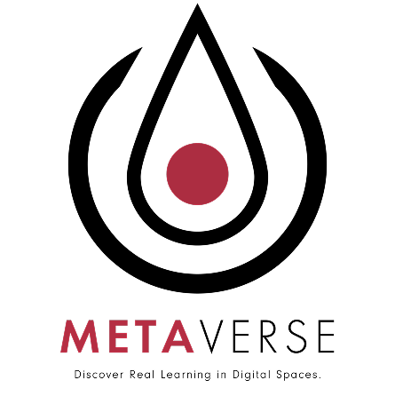
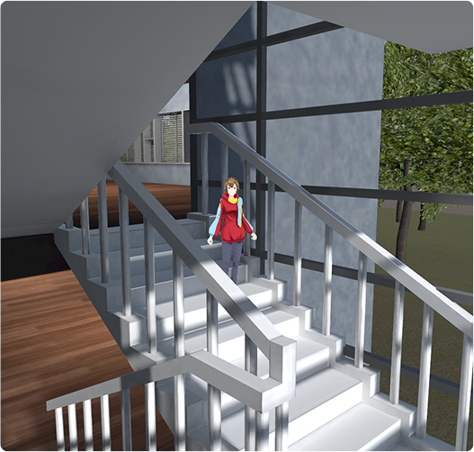
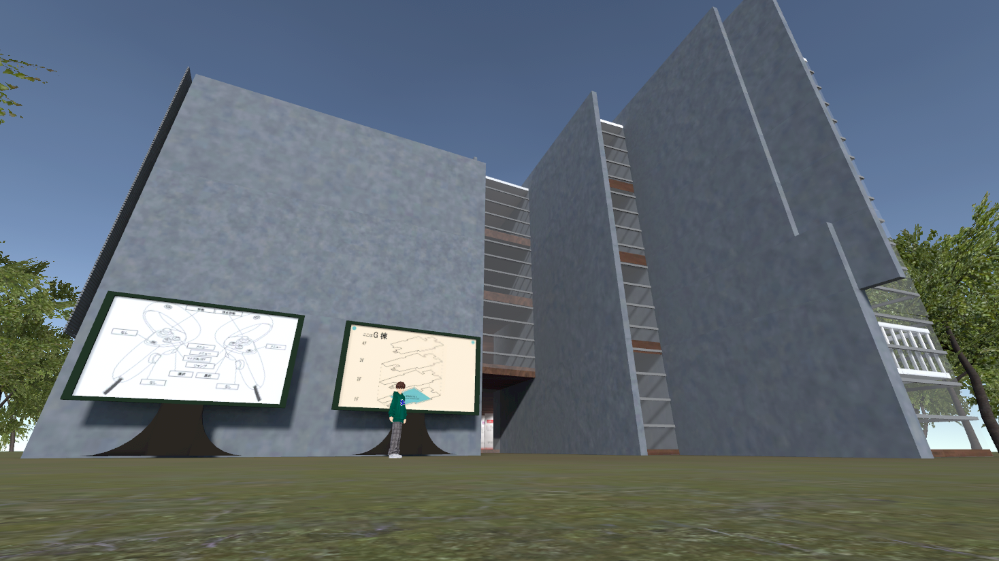

これまでのメタバースプロジェクトと今後の展望。
-Journey-
これまでに私たちは、遠方の方でも気軽に参加できるよう北海道科学大学の校舎を仮想空間に再現してきました。当初は「実際のキャンパス体験に比べリアルさに欠ける」との声もありましたが、細部の再現性を高め、付加価値を加えることで、よりリアルな体験を提供できるよう努めました。
また、少人数での3Dモデル制作や技術実装は大きな課題でしたが、チームで協力し乗り越えてきました。今後は、進学を考える高校生の皆さんにとって役立つコンテンツを提供し、大学選びの手助けができるよう尽力していきます。

また、少人数での3Dモデル制作や技術実装は大きな課題でしたが、チームで協力し乗り越えてきました。今後は、進学を考える高校生の皆さんにとって役立つコンテンツを提供し、大学選びの手助けができるよう尽力していきます。

誰もが、どこにいても、いつでも、知ることのできる大学
-Futura-
「メタバースプロジェクト」は、当初オンライン授業の利便性向上を目標としていましたが、ポストコロナ時代における需要減少を受け、「仮想空間でのオープンキャンパス体験の提供」へと方針を変更しました。現在はオープンキャンパスやNETオープンキャンパスに参加し、高校生への体験機会を提供しています。今後は動画配信などを通じて構築プロセスを公開し、北海道科学大学の認知度向上を目指します。
本プロジェクトでは、多くの学生の参加を歓迎します。「ガクチカを作りたい」「仮想空間構築に興味がある」「冊子を作りたい」「プレゼン技術を向上させたい」などの理由でもOK。
新たなスキルを学び、充実した大学生活を送りませんか？

本プロジェクトでは、多くの学生の参加を歓迎します。「ガクチカを作りたい」「仮想空間構築に興味がある」「冊子を作りたい」「プレゼン技術を向上させたい」などの理由でもOK。
新たなスキルを学び、充実した大学生活を送りませんか？
プロジェクトを支える３つの部門
-Dept-
私たちのプロジェクトには、主に
「企画部」「制作部」「広報部」
の3 つの部署 があります。それぞれの部署が多様な活動を行っています。
「企画部」
では、新しい課題の設定や今後の配信活動の準備を担当してい
ます。また、この冊子のような印刷物の制作も行っており、プロジェクトの全体的なプランニングをリードしています。
「制作部」
では、G 棟の3D モデルの作成など、さまざまなモノづくりに 取り組んでいます。特に3D
空間の構築はプロジェクトの基盤となる重要な作 業であり、この部門の中心的な活動です。
「広報部」
では、プロジェクトの活動内容を広く発信し、さまざまな場
面で報告や宣伝を行っています。広報活動に興味がある方は、ぜひこの部署に 参加してみてください。
それぞれの部署が独自の役割を果たし、プロジェクトを支えています。
Copyright © Hokkaido University of Science Metaverse project All rights reserved.
X/Twitter
note
youtube
Instagram
Photos taken during the activity.
◀

▶